<nav class="navbar navbar-expand-lg fixed-top navbar-transparent" color-on-scroll="500">
    <div class="container">
        <div class="navbar-translate">
            <a class="navbar-brand" href="#"> </a>
            <button class="navbar-toggler navbar-burger" type="button" data-toggle="collapse" data-target="#navbarToggler" aria-controls="navbarTogglerDemo02" aria-expanded="false" aria-label="Toggle navigation" (click)="sidebarToggle()">
                <span class="navbar-toggler-bar"></span>
                <span class="navbar-toggler-bar"></span>
                <span class="navbar-toggler-bar"></span>
            </button>
        </div>
        <div class="navbar-collapse" id="navbarToggler">
            <ul class="navbar-nav ml-auto">
                <!-- <li class="nav-item">
                    <a [routerLink]="['/our-services']" *ngIf="!isServices()" class="nav-link">Our Services</a>
                    <a [routerLink]="['/home']" *ngIf="isServices()" class="nav-link">Back to Home</a>
                </li>
                <li class="nav-item">
                    <a [routerLink]="['/about-us']" *ngIf="!isAboutUs()" class="nav-link">About Us</a>
                    <a [routerLink]="['/home']" *ngIf="isAboutUs()" class="nav-link">Back to Home</a>
                </li> -->
                <li class="nav-item">
                    <a class="nav-link" rel="tooltip" title="Follow us on Twitter" data-placement="bottom" href="https://twitter.com/MoondreamC" target="_blank">
                        <i class="fa fa-twitter"></i>
                        <p class="d-lg-none">Twitter</p>
                    </a>
                </li>
            </ul>
        </div>
    </div>
</nav>
